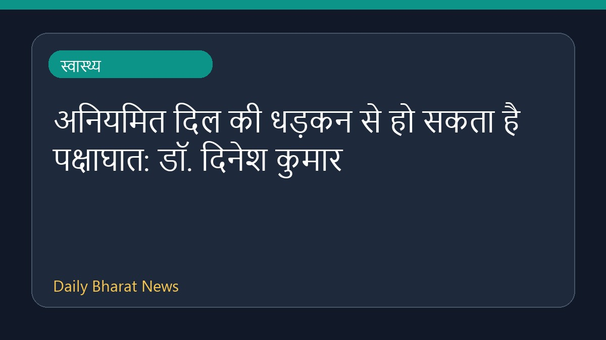

अनियमित दिल की धड़कन से हो सकता है पक्षाघात: डॉ. दिनेश कुमार

डॉ. दिनेश कुमार, डीएम न्यूरोलॉजी के अनुसार अनियमित दिल की धड़कन वाले मरीजों में पक्षाघात यानी पैरालिसिस का खतरा हो सकता है। मैगज़ीन के एक क्यू एंड ए सत्र में इस बात पर चर्चा की गई है कि कुछ लोगों में यह समस्या चालीस साल पहले क्यों दिखाई देती है। इसके अलावा, भारत में लगभग अस्सी लाख लोग इस हृदय रोग से अनजान हो सकते हैं। इस विषय पर पेनसिल्वेनिया स्टेट यूनिवर्सिटी और बोस्टन साइंटिफिक द्वारा एट्रियल फिब्रिलेशन जैसी दोहरी चुनौतियों के इलाज पर भी जानकारी दी गई है।
मूल स्रोत: Health News Sources
Patients with irregular heartbeat become paralyzed: Dr. Dinesh Kumar, DM Neurology - Magzter ↗
Patients with irregular heartbeat become paralyzed: Dr. Dinesh Kumar, DM Neurology - Magzter ↗